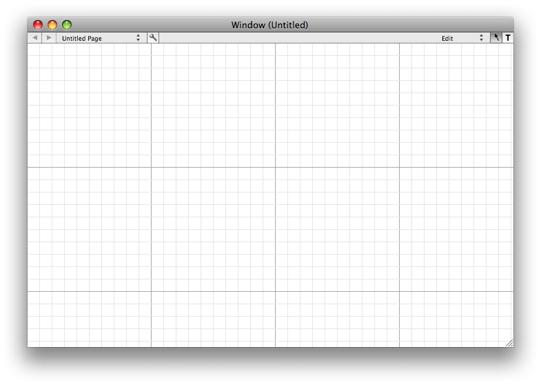
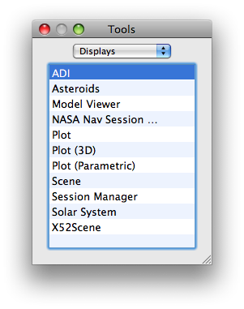
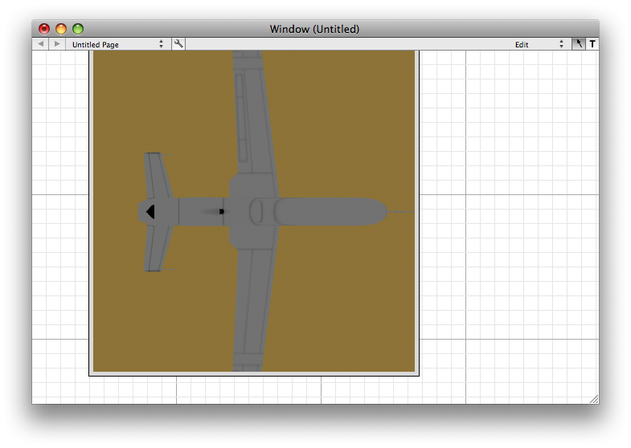
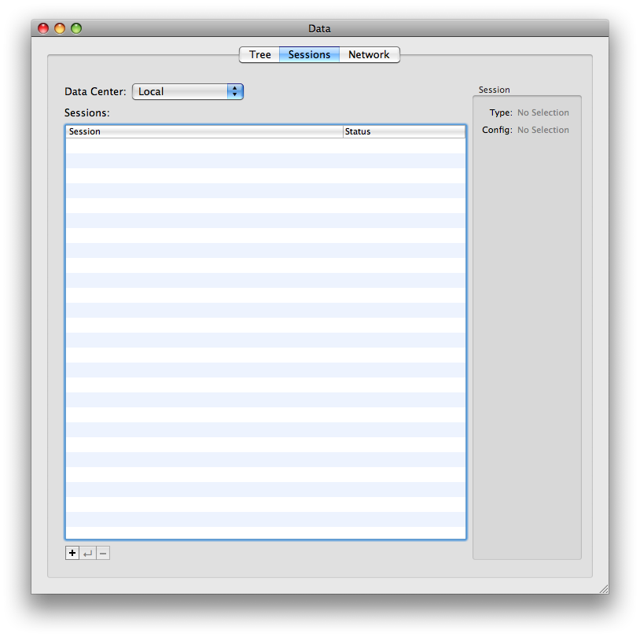
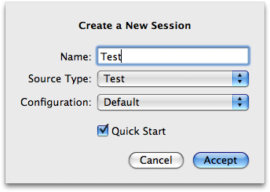
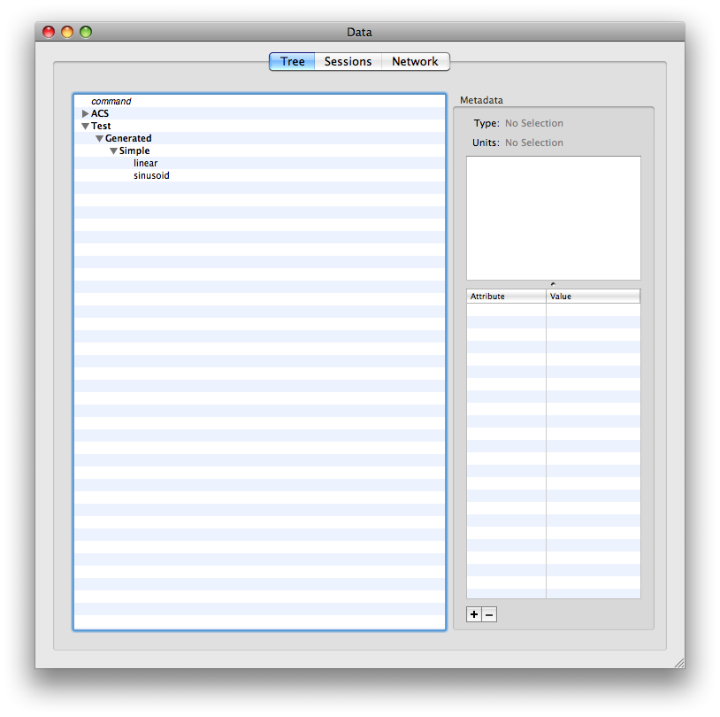
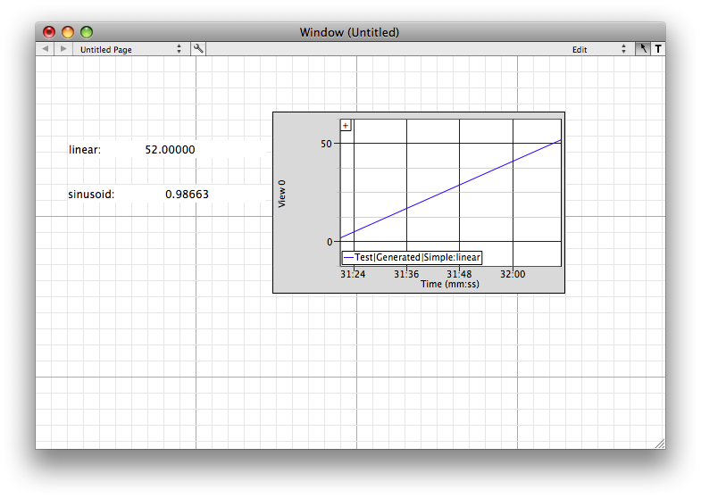

This page explains how to drag and drop to create interfaces in VisualCommander.
Tools are used to display data. Many use OpenGL graphics. You can use the tools that come with VisualCommander or build your own.
Double click on VisualCommander. The following window appears. The grid lines allow you to line up displays easily. When VisualCommander opens the window, you are in edit mode. In this mode you can add interface elements. In run mode you cannot but you can switch to edit mode at any time. Interfaces can be saved and loaded again. Whenever you quit VisualCommander it will ask you if you wish to save an interface. The "T" button switches you into text mode and allows you to add static text to your window. The wrench button opens an inspector that lists all view elements. A window can have multiple pages. You add pages using the inspector and selecting the Window button. You can also edit the page names in the inspector.
Pull down on the Window menu and select Tools.
Drag X52Scene from the Tools window to your interface window.

In the window menu, pull down data.
Click on the Plus button to add a new data session.
Type in Test and select Test from the pulldown menu. Click Accept. Next, click on Tree. A hierarchical display of data will be shown. Only the non-bold words are data.
Now drag the two data points to the window. You'll see the number appear. Drag plot and drop one of the numbers on the plot. It will immediately start drawing a graph of the data.
